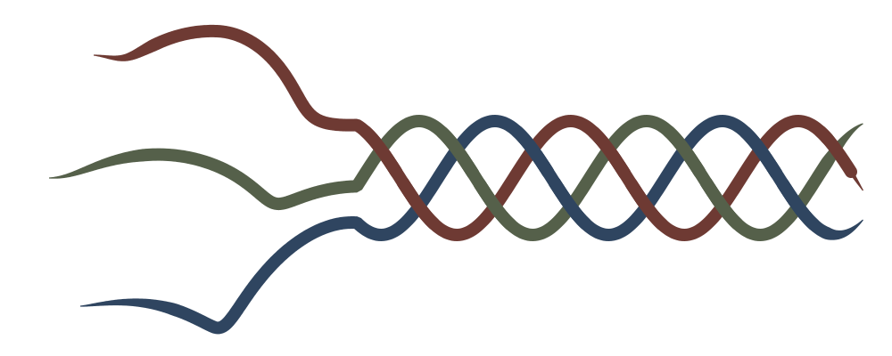

Shoddy · Fettler
The rag trade of the West Riding, and why this language is built the same way
In 1813, in Batley, a clothier — a maker of cloth — named Benjamin Law worked out how to do something the wool trade had thought impossible: make new cloth from old. The towns around him — Ossett, Morley, Dewsbury, and Wakefield, the “Heavy Woollen District” of the West Riding of Yorkshire — built an entire industry on the idea. Rags flowed in from everywhere: from rag-and-bone men working British streets, and by the ton from Europe and beyond. The rags were sorted largely by women, by hand, by color and grade — a skill in itself. Then they were fed to a spiked, snarling grinding machine the trade called the devil, which tore the old cloth back into loose fiber. Soft rags — old knitwear, stockings — yielded shoddy. Hard, felted tailor's cloth, conquered a couple of decades later by a fiercer process, yielded the finer mungo, a Batley coinage. The reclaimed fiber was blended with a proportion of new wool. It was then carded (combed straight), spun on mules (the great spinning machines of the day), and woven into cloth again.
One of those towns, Ossett, put the whole idea on its coat of arms: Inutile Utile Ex Arte — “the useless made useful by skill.” That motto, in English, is this project's tagline.
Shoddy cloth dressed the people that virgin wool — new, never-used wool — priced out. It became cheap suits, overcoats, and blankets for the working class at home and for export; pilot cloth — a heavy blue wool for sailors' coats — and druggets, a coarse, hard-wearing cloth; and above all, uniforms. The Crimean War, the Franco-Prussian War, and both World Wars were fought substantially in reclaimed Yorkshire wool. The mills' order books rose and fell with the world's armies. It was the American Civil War that ruined the word. Union contractors supplied uniforms of such poor recycled cloth that they reportedly dissolved in the rain, and “shoddy” crossed the Atlantic as a slur. That was always a little unjust to Ossett, Morley, and Wakefield, where the good mills made honest cloth and their owners' fortunes built town halls and chapels. Even the waste had a use: unspinnable dust was sold as fertilizer for the hop gardens of Kent. Nothing left the mill useless.
After the Second World War the trade's foundations gave way from two directions at once. Nylon, polyester, and acrylic made new fiber cheaper than reclaimed wool, erasing shoddy's whole reason to exist. More fatally, the synthetics poisoned the feedstock — the supply of rags — itself. The rag stream filled with blended fabrics that could not be sorted into pure wool nor torn back into spinnable fiber, and the devil had nothing left it could digest. Tastes moved to lighter cloth in centrally heated homes. Armies went synthetic. The mills thinned through the 1950s and 60s. By the 1980s an industry that had run for a century and a half was effectively gone — just as the wider world began rediscovering, under the name “textile recycling,” the thing the West Riding had industrialized in 1813.
A fettler kept a mill's carding engines in order. Carding combs tangled fibre into a loose web, ready for spinning. The engine does it with rollers wrapped in card clothing — a dense bed of fine wire teeth. Those teeth clog with matted fibre, oil, and dirt, and a clogged card cards nothing. The fettler stripped the teeth, cleaned them, set them back to their proper height and spacing, and repaired what had bent.
He made no cloth. Not a yard of it. His whole job was keeping the cloth-making machines in a state where they could make it. That is this tool's relationship to everything around it. Fettler compiles nothing, runs nothing, and produces no program of its own. It keeps the material in order so the machines that do produce something can.
To fettle is plain English for exactly that: to put right, to make ready, to set in order. The word survives in the phrase in fine fettle. So the name carries its own meaning without a glossary — more than most tools named after a trade can say.
fettle. The command uses the verb form because
fettle move a.txt b.txt reads as an instruction, and
fettler move does not. Both spellings are correct. Neither
is a typo.The analogy runs deeper than the name. Shoddy-the-language was made the
way shoddy-the-cloth was: nothing in it is new fiber. Its parts came from
older languages and older systems — BASIC's keywords, Forth's stack, Joy's
quotations, QuickBASIC's Type, VB's IsEmpty,
ISAM from the mainframe age. Old cloth, gathered and sorted. The lexer —
the part of the toolchain that splits source text into its smallest
pieces — is the devil, tearing source into fibers. Desugaring is the
carding and re-spinning: it turns convenient surface syntax into core
thread. A proportion of new wool is blended in — closures (functions that
remember the variables around them), pattern matching, root
Let — because pure reclamation was never the whole recipe. The
mill weaves it, the machines are its
equipment, and programs are the cloth. The golden files — saved correct
outputs that every test run must match — are the cloth-hall inspection that
decides whether a piece is true. Even the slur is part of the inheritance:
the name invites the world to expect rubbish, and the product's job is to
be better than its reputation — the oldest trick in Batley. And the
industry's ending is the analogy's quiet warning, already heeded. When the
old substrate could no longer sustain the process, the answer was not to
stop reclaiming but to move to new fiber — which is what the .NET mill
is.

The project's mark tells the same story in a single line. Three threads enter loose from three directions — rag stock, tangled and unsorted — and from about the two-fifths mark they run woven, over and under, into one continuous plait. The icon is the same gesture compressed to a square. The colors are the trade's own. Reclaimed fiber could never be bleached, only dyed darker, so the Heavy Woollen District lived at the dark end of the dye book. Each thread wears one of its staple shades:
#6E3A33) — the red of army cloth and
overcoatings;#55604A) — the workaday shade of mixed,
color-sorted rag stock;#2F4560) — the blue of pilot cloth, the
district's heavy staple.They are also — deliberately — a shade of R, a shade of G, and a shade of B: red, green, and blue, the primaries of the new loom, dyed in the old lots.